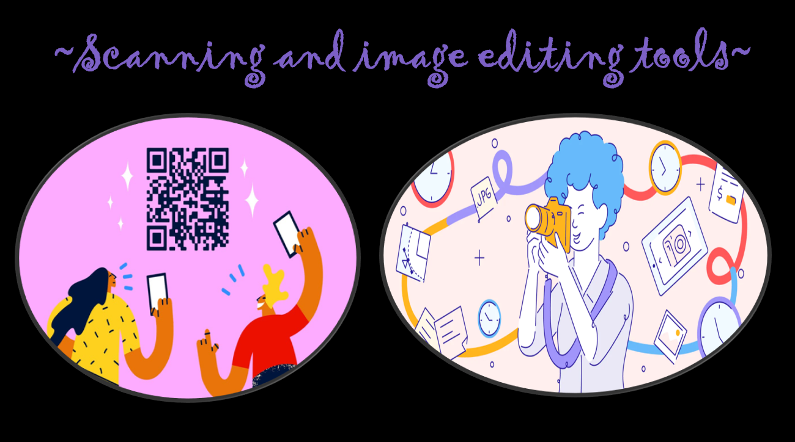
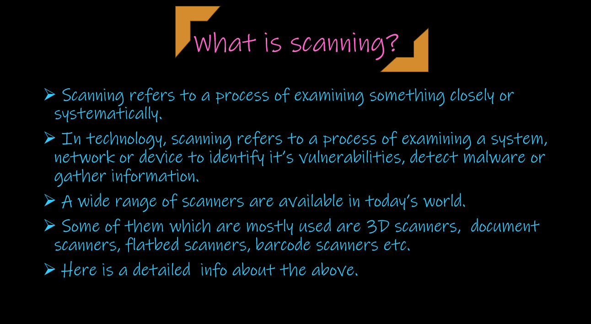
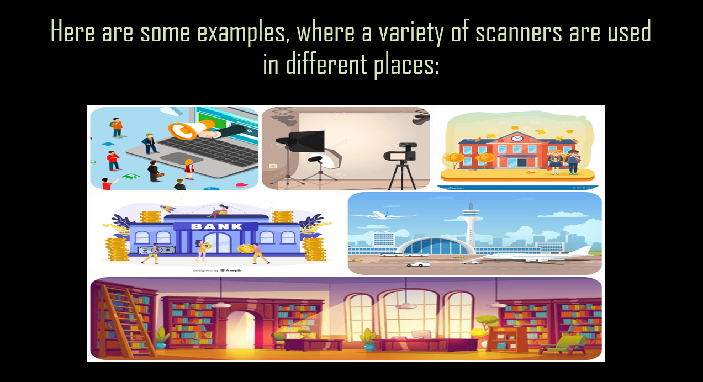
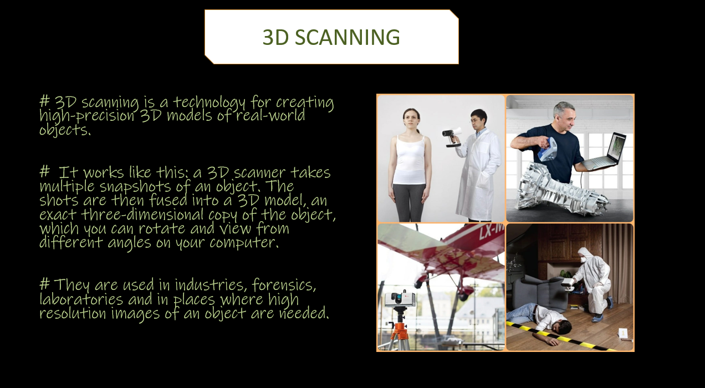
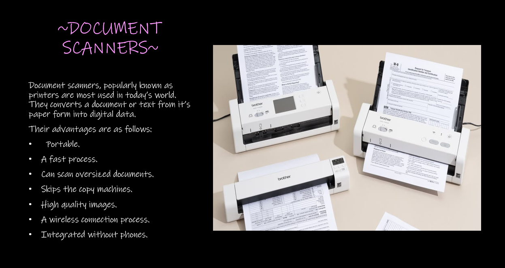
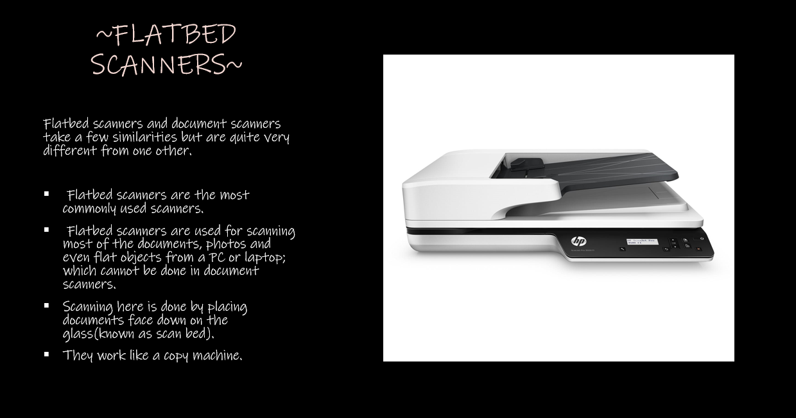
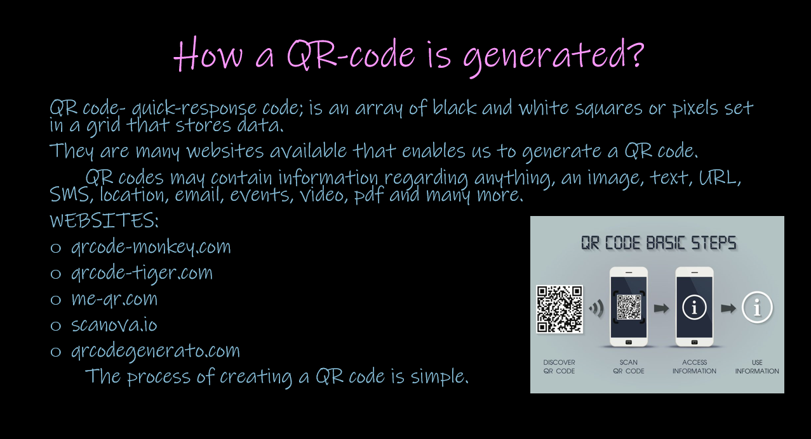

The topic that we have chosen for our presentation is:

Here is a breif description about SCANNING:






The video below is a demonstration of our presentaion involving an explanation about scanning and its various classifications along with a breif lecture on how different image editing tools are used~